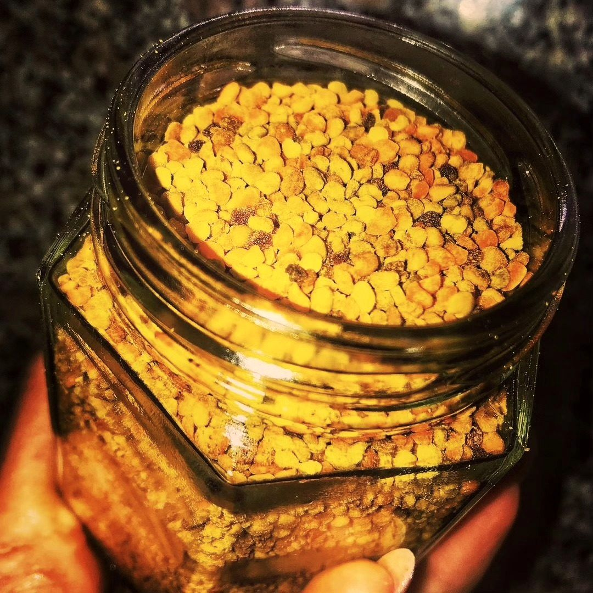

Продукти бджільництва — це їжа, і в них є свої правила безпеки.
У меді можуть бути спори бактерії Clostridium botulinum. У дорослих і дітей після року кишечник із ними справляється, а в немовляти ще ні, тому в дитячому кишечнику вони можуть проростати й виділяти токсин. Спори витримують нагрівання, тож і в запіченому чи розведеному вигляді мед дітям до року не дають.
Мед, пилок, перга, прополіс і забрус можуть викликати алергічну реакцію, іноді сильну. Нерідко вона пов’язана з пилком рослин, який є в цих продуктах. Якщо у вас алергія на пилок рослин, мед чи укуси бджіл, спершу порадьтеся з лікарем. Якщо після вживання з’явилися набряк обличчя чи губ, кропив’янка, утруднене дихання, негайно викликайте швидку допомогу.
Мед складається переважно з цукрів, тож він підвищує рівень глюкози в крові. Чи можна його вживати й у якій кількості, вирішує лікар. Про те, чим мед відрізняється від цукру, розповідає стаття «Мед чи цукор».
Перед тим як уводити пилок і пергу, а також прополіс, порадьтеся з лікарем: особливо коли ви приймаєте ліки, зокрема для розрідження крові. Це стосується й дітей: пилок і пергу їм без лікаря не дають.
Починайте з дуже малої кількості й не вводьте кілька нових продуктів одночасно: так буде зрозуміло, на що саме була реакція. Дивіться також розділ про користь і про зберігання.
Прополіс частіше інших продуктів дає контактну алергію: шкіра червоніє й свербить. Тому перед першим застосуванням його теж пробують обережно. Віск, з якого роблять свічки, їжею не є, а ось запах і дим палаючої свічки теж можуть дратувати чутливих людей.
Якщо після вживання меду, пилку чи перги з’явилися висип, свербіж, нудота або будь-яка незвична реакція, припиніть вживання й зверніться до лікаря. Не чекайте, що минеться само, особливо в дітей, вагітних і людей із хронічними захворюваннями.
Дітям до року мед не можна. Алергію, діабет, вагітність і прийом ліків обговорюйте з лікарем. Нове пробуйте помалу, а за будь-якої незвичної реакції припиняйте вживання. Це загальні правила, а не медична порада.
Чи можна дітям мед після року?
Так, у невеликих кількостях. Алергію й індивідуальні обмеження обговоріть із лікарем.
Чи можна мед під час діабету?
Це питання до лікаря: кількість і частоту визначає він.
Що робити, якщо виникла реакція?
Припиніть вживання. Якщо є утруднене дихання або набряк, викличте швидку допомогу.